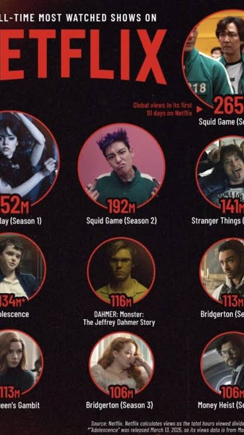

Aficiones
En este apartado voy hablar de mis aficiones perosnales.
Deporte
| Actividad | Frecuencia | Interes |
| Deporte | semanal | medio |
| Videjuegos | diario | bajo |
Una de mis afciones principales es el deporte en especial el futbol que lop he practicado durante casi toda mi vida y tambien me gusta verlo
Videojuegos
los videos es la segunda aficion que tengo ya que me gusta pasar el tiempo jugando con amigos.
Series
Ver series es una de mis aficiones favoritas cuando tengo tiempo libre.
